01. while: 조건을 먼저 검사
조건이 참인 동안 같은 작업 반복
같은 작업을 여러 번 수행
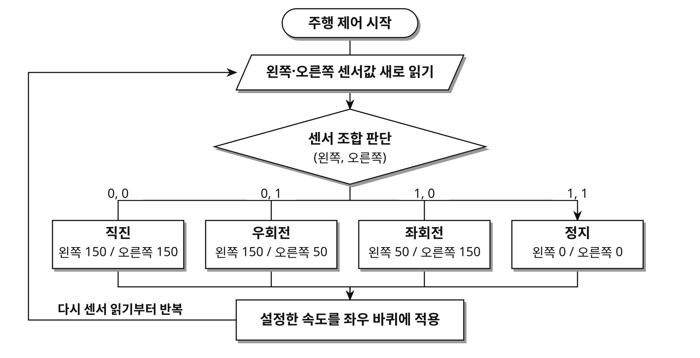
| 판단 시점 | 센서값 (왼쪽, 오른쪽) | 선택 동작 | 설정 속도 (왼쪽, 오른쪽) |
|---|---|---|---|
| 첫 번째 | (0, 0) | 직진 | (150, 150) |
| 두 번째 | (0, 1) | 우회전 | (150, 50) |
| 세 번째 | (1, 0) | 좌회전 | (50, 150) |
| 네 번째 | (1, 1) | 정지 | (0, 0) |
while, do–while, for 세 가지 형태.조건이 참인 동안 같은 작업 반복
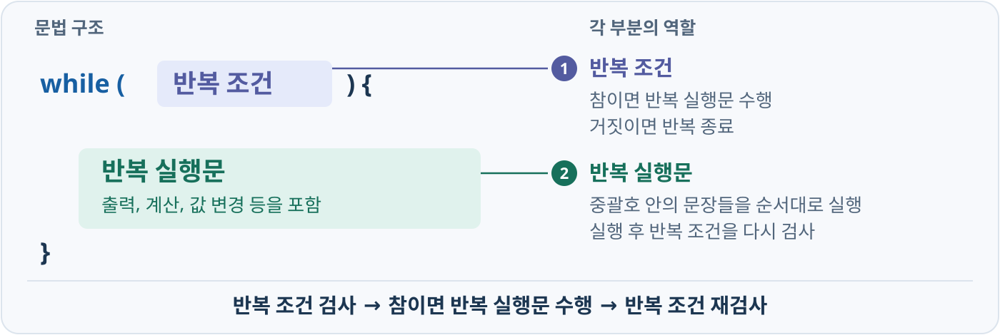
작업 후 조건을 검사하여 반복 여부 결정
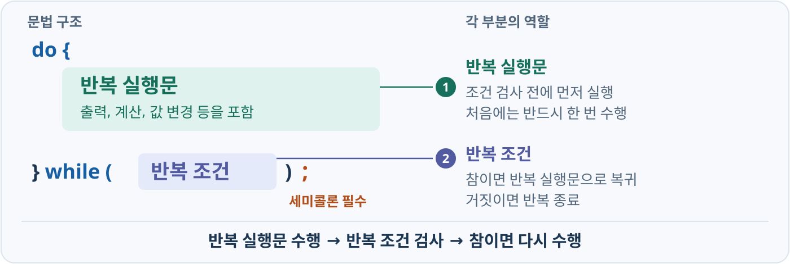
실행 결과가 여기에 표시됩니다.
실행 결과가 여기에 표시됩니다.
세 번의 작업부터 천 번의 작업까지
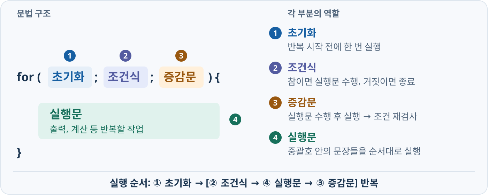
for (int i = 0; i < 3; i++) {
printf("i=%d\n", i);
}
| 구성 | 예시 | 역할 |
|---|---|---|
| 초기화 | int i = 0 |
반복 시작 전에 한 번 실행 |
| 조건식 | i < 3 |
본문 실행 전마다 검사 |
| 증감식 | i++ |
본문 실행 후 값 변경 |
| 반복 본문 | printf(...) |
조건이 참일 때 실행할 작업 |
괄호 안의 세 부분은 세미콜론
;두 개로 구분.
i = 0으로 시작.i < 3 검사.i++ 실행 후 조건식으로 복귀.코드에 적힌 위치와 실제 실행 순서를 구분. 증감식은 본문 뒤에 실행됨.
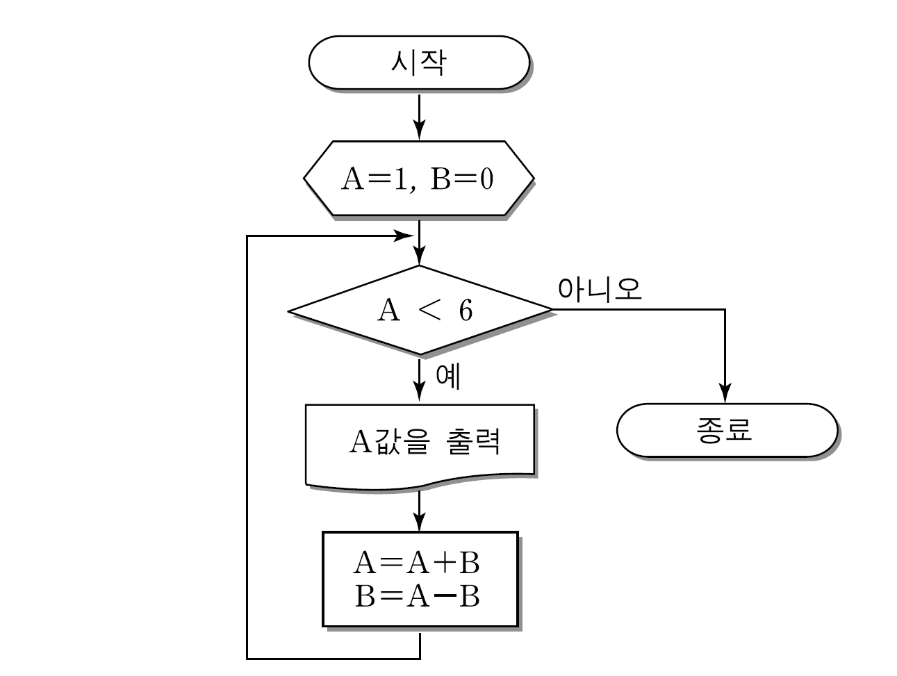
| 번호 | 출력 결과 |
|---|---|
| ① | 1 1 1 1 1 |
| ② | 1 1 2 2 3 |
| ③ | 1 1 2 3 5 |
| ④ | 1 2 3 2 1 |
| ⑤ | 1 2 3 4 5 |
| iter | A | B |
|---|---|---|
| 1 | 1 | 0 |
| 2 | 1 | 1 |
| 3 | 2 | 1 |
| 4 | 3 | 2 |
| 5 | 5 | 3 |
어디서 시작하여, 언제 멈추고, 얼마나 변경할지 결정
for (int i = 0; i < 5; i++) {
printf("%d ", i);
}
<와 <= 중 무엇을 사용할까?for (int i = 1; i <= 5; i++) {
printf("%d ", i);
}
for (int i = 5; i >= 1; i--) {
printf("%d ", i);
}
for (int i = 0; i <= 10; i += 2) {
printf("%d ", i);
}
for (int angle = 0; angle <= 90; angle += 30) {
printf("%d ", angle);
}
for (int i = 0; i < 5;) {
printf("%d ", i);
}
i < 5는 참일까, 거짓일까?for (;;)처럼 조건식을 생략해도 항상 참으로 취급.실행 결과가 여기에 표시됩니다.
이전 계산 결과를 저장하고 다음 반복에서 활용
실행 결과가 여기에 표시됩니다.
| i | 더하기 전 sum | 계산 | 더하기 후 sum·출력 |
|---|---|---|---|
| 1 | 0 | 0 + 1 | 1 |
| 2 | 1 | 1 + 2 | 3 |
| 3 | 3 | 3 + 3 | 6 |
1 3 6 / 마지막 합계: 6.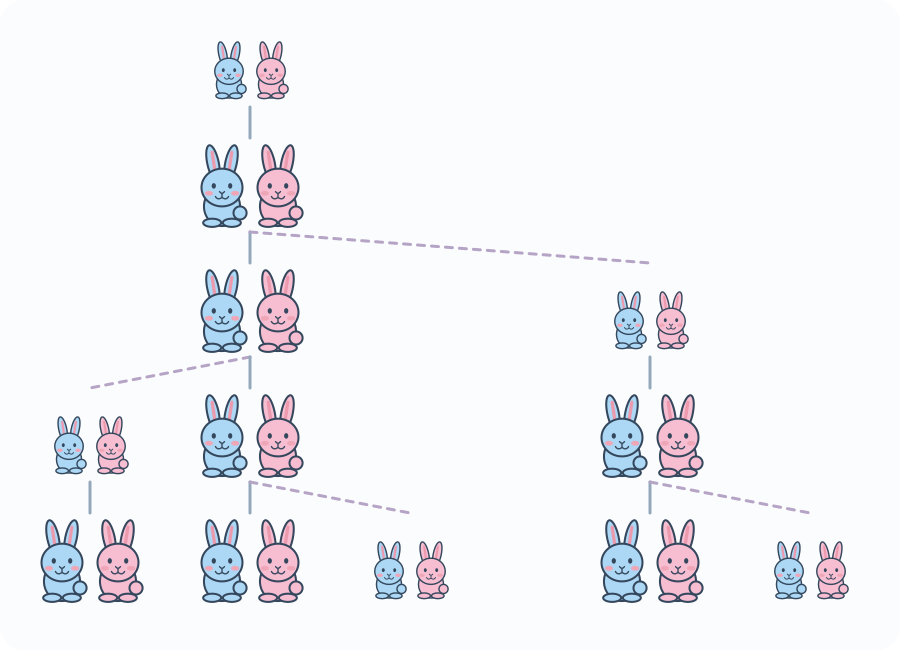
1 → 1 → 2 → 3 → 5 → ?
a1=1,a2=1ai=ai−1+ai−2(i≥3)
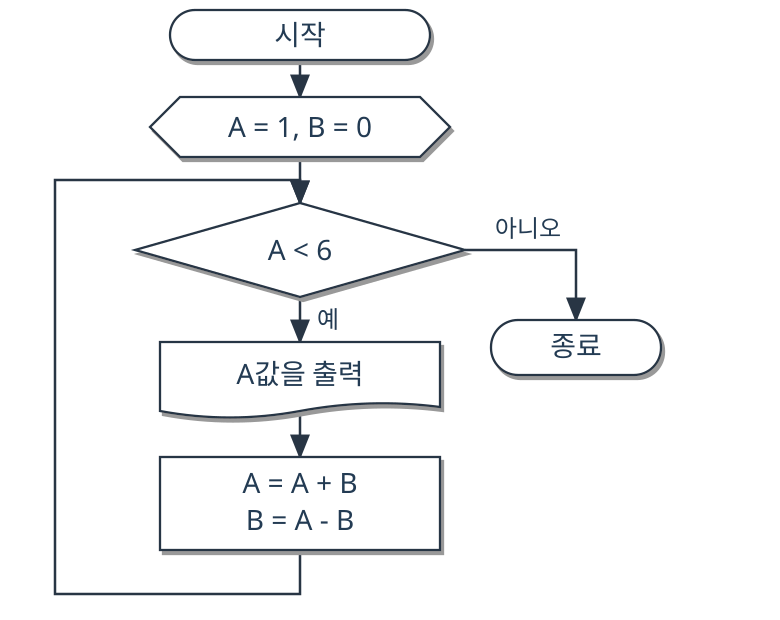
실행 결과가 여기에 표시됩니다.
for는 반복, if는 각 반복에서의 작업 선택
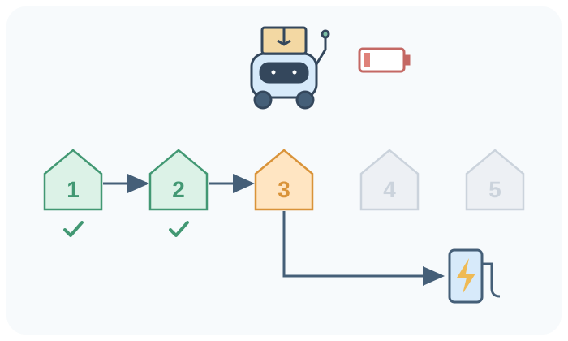
1, 2. 복귀는 반복문 뒤의 별도 동작.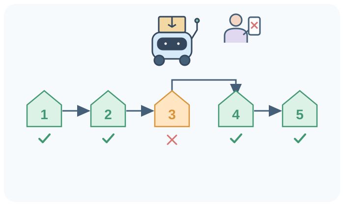
1, 2, 4, 5.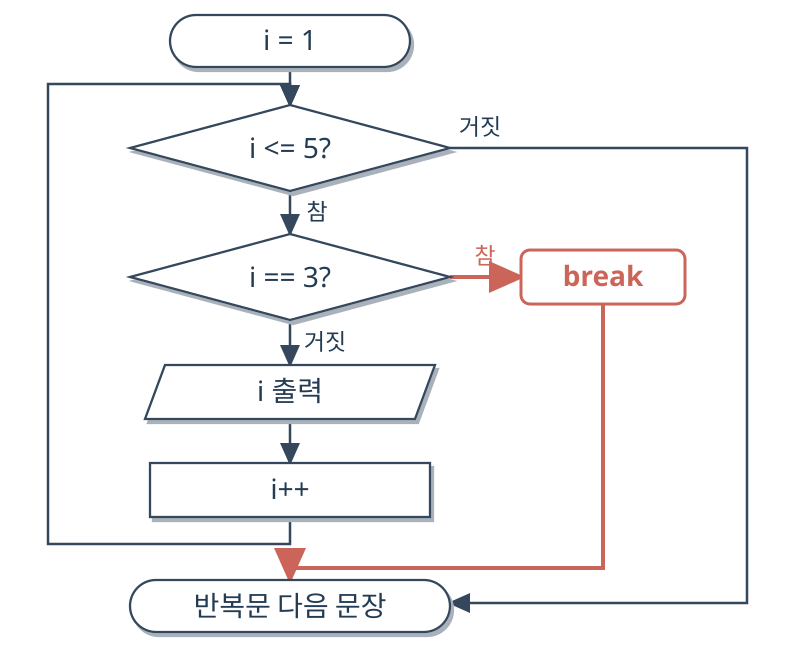
실행 결과가 여기에 표시됩니다.
1 2 → 줄바꿈 후 종료.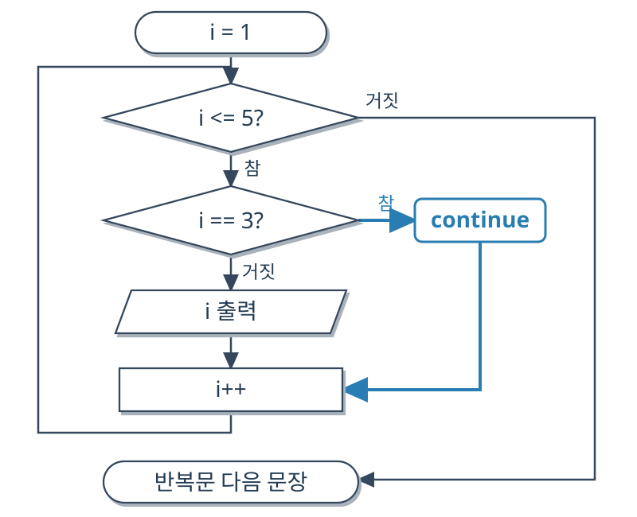
실행 결과가 여기에 표시됩니다.
1 2 4 5 → 줄바꿈 후 종료.실행 결과 예측 → 오류 확인 → 코드 수정 → 다시 실행
목표: 1 2 3 출력.
실행 결과가 여기에 표시됩니다.
목표: 1 2 3 출력.
실행 결과가 여기에 표시됩니다.
목표: 별 5개를 한 줄로 출력.
실행 결과가 여기에 표시됩니다.
목표: 3 2 1 출력.
실행 결과가 여기에 표시됩니다.
목표: 누적합 1 3 6 출력.
실행 결과가 여기에 표시됩니다.
목표: 별 3개를 한 줄로 출력.
실행 결과가 여기에 표시됩니다.
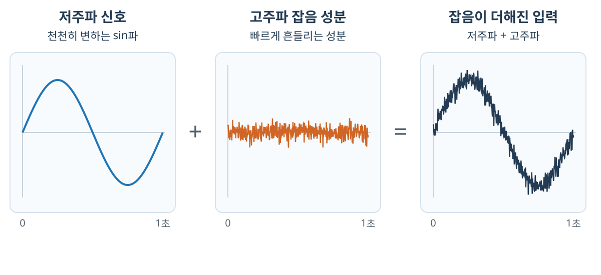
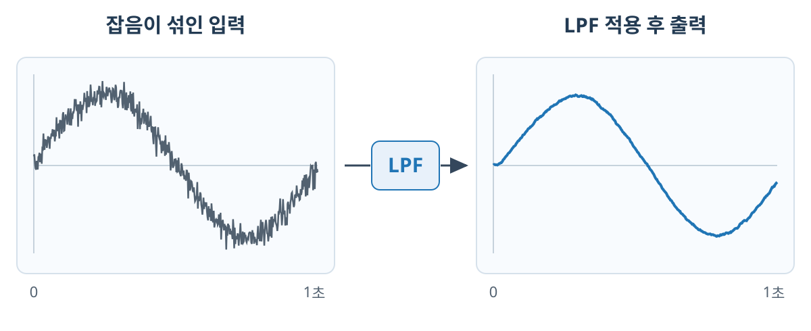
필터 출력 = (1 − 비율) × 이전 필터 출력 + 비율 × 센서 입력
yi=(1−α)yi−1+αxi
(1−α)+α=1
실행 결과가 여기에 표시됩니다.
코드 실행 후 결과 적용
실행 결과가 여기에 표시됩니다.
코드 실행 후 결과 적용
시작 숫자를 입력받아, 같은 숫자로 돌아올 때까지의 변환 횟수를 출력하는 프로그램.
currentcurrent / 10 + current % 10(current % 10) * 10 + sum % 10현재 숫자의 일의 자리 → 다음 숫자의 십의 자리 / 합의 일의 자리 → 다음 숫자의 일의 자리
26에서 한 단계를 눌러 규칙 관찰 → 시작 숫자로 돌아올 때의 반복 횟수 확인.55, 0으로 바꾸어 예상 후 실행 → 다음 실습에서 같은 결과를 C 코드로 구현.26→68→84→42→26
| 계산 | 26의 예 |
|---|---|
십의 자리: current / 10 |
2 |
일의 자리: current % 10 |
6 |
| 두 자리의 합 | 2 + 6 = 8 |
다음 숫자: (current % 10) * 10 + sum % 10 |
60 + 8 = 68 |
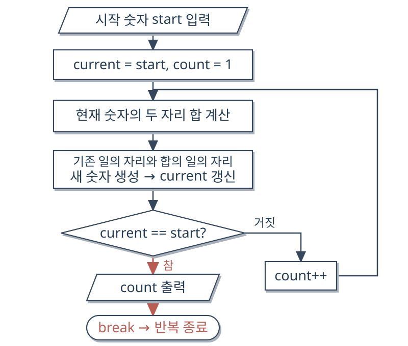
실행 결과가 여기에 표시됩니다.
for로 이동 반복, if로 방향 전환 판단
| 항목 | 값 |
|---|---|
| 시작 위치 | 좌측 상단 (0, 0) |
| 첫 이동 방향 | 오른쪽 |
| 방문 수 | 25칸, 각 칸 한 번씩 |
| 도착 위치 | 중심 (2, 2) |
(행, 열) = (0, 0)에서 시작.(n / 2, n / 2).
| 기억할 값 | 역할 |
|---|---|
row, col |
현재 행·열, 아래쪽·오른쪽으로 증가 |
direction |
오른쪽 0, 아래 1, 왼쪽 2, 위 3 |
top, bottom, left, right |
아직 이동 가능한 영역의 경계 |
| 방문 횟수 | 시작점 포함 n * n회 좌표 출력 |
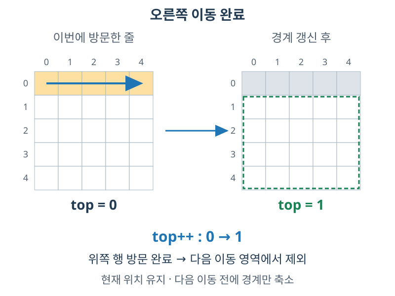
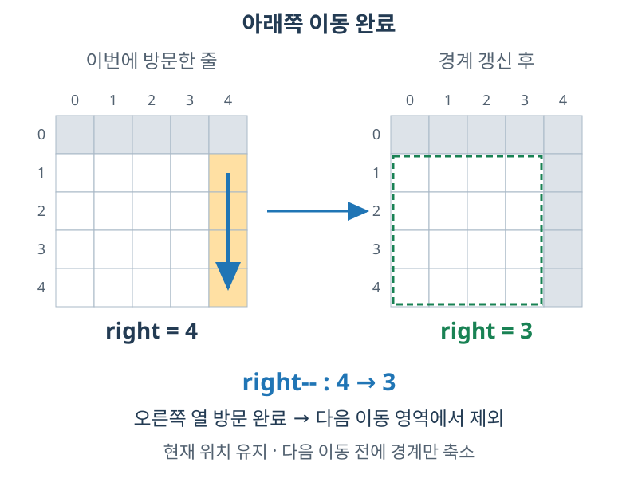
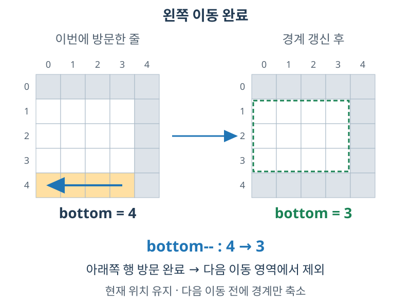
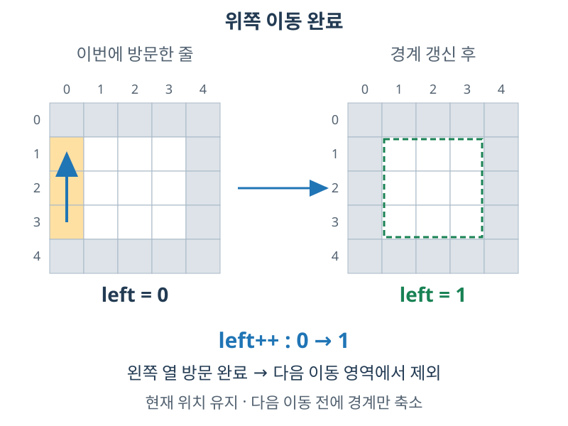
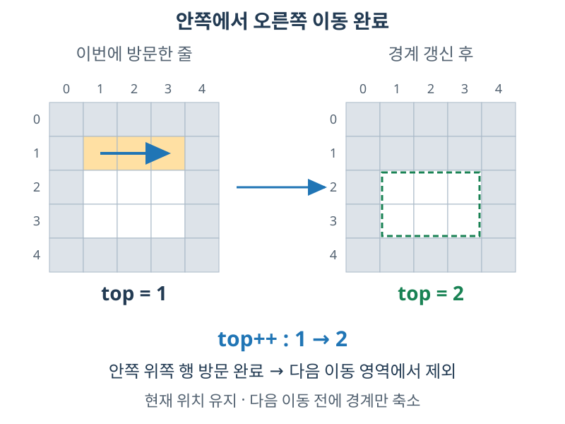
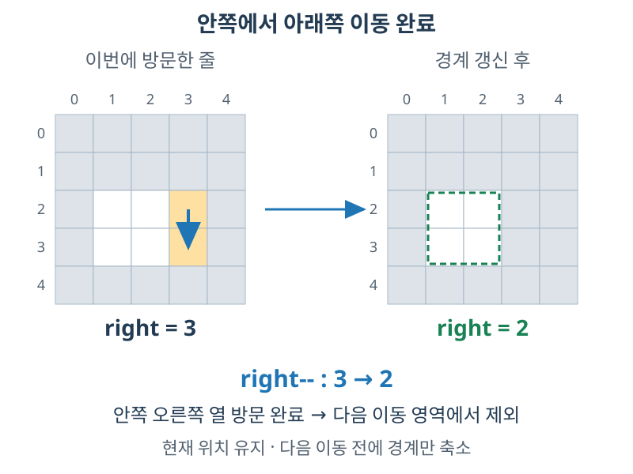
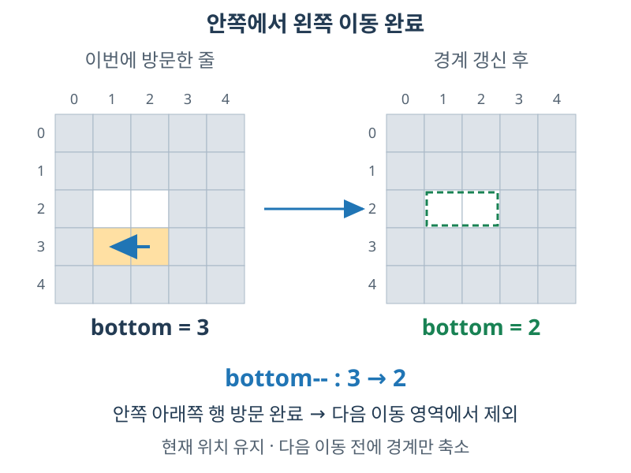
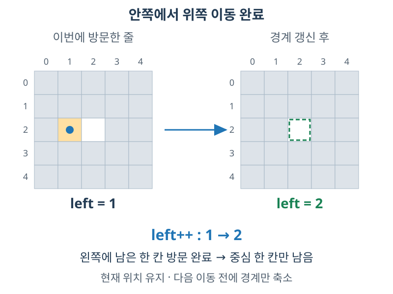
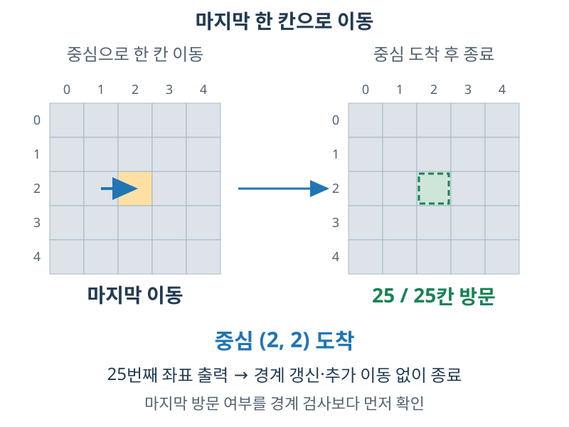
| row | col | direction | top | bottom | left | right |
|---|---|---|---|---|---|---|
| 0 | 0 | 0 | 0 | 2 | 0 | 2 |
| 0 | 1 | 0 | 0 | 2 | 0 | 2 |
| 0 | 2 | 0 | 0 | 2 | 0 | 2 |
| 1 | 2 | 1 | 1 | 2 | 0 | 2 |
| 2 | 2 | 1 | 1 | 2 | 0 | 2 |
| 2 | 1 | 2 | 1 | 2 | 0 | 1 |
| 2 | 0 | 2 | 1 | 2 | 0 | 1 |
| 1 | 0 | 3 | 1 | 1 | 0 | 1 |
| 1 | 1 | 0 | 1 | 1 | 1 | 1 |
| row | col | direction | top | bottom | left | right |
|---|---|---|---|---|---|---|
| 0 | 0 | 0 | 0 | 4 | 0 | 4 |
| 0 | 1 | 0 | 0 | 4 | 0 | 4 |
| 0 | 2 | 0 | 0 | 4 | 0 | 4 |
| 0 | 3 | 0 | 0 | 4 | 0 | 4 |
| 0 | 4 | 0 | 0 | 4 | 0 | 4 |
| 1 | 4 | 1 | 1 | 4 | 0 | 4 |
| 2 | 4 | 1 | 1 | 4 | 0 | 4 |
| 3 | 4 | 1 | 1 | 4 | 0 | 4 |
| 4 | 4 | 1 | 1 | 4 | 0 | 4 |
| 4 | 3 | 2 | 1 | 4 | 0 | 3 |
| 4 | 2 | 2 | 1 | 4 | 0 | 3 |
| 4 | 1 | 2 | 1 | 4 | 0 | 3 |
| 4 | 0 | 2 | 1 | 4 | 0 | 3 |
| 3 | 0 | 3 | 1 | 3 | 0 | 3 |
| 2 | 0 | 3 | 1 | 3 | 0 | 3 |
| 1 | 0 | 3 | 1 | 3 | 0 | 3 |
| 1 | 1 | 0 | 1 | 3 | 1 | 3 |
| 1 | 2 | 0 | 1 | 3 | 1 | 3 |
| 1 | 3 | 0 | 1 | 3 | 1 | 3 |
| 2 | 3 | 1 | 2 | 3 | 1 | 3 |
| 3 | 3 | 1 | 2 | 3 | 1 | 3 |
| 3 | 2 | 2 | 2 | 3 | 1 | 2 |
| 3 | 1 | 2 | 2 | 3 | 1 | 2 |
| 2 | 1 | 3 | 2 | 2 | 1 | 2 |
| 2 | 2 | 0 | 2 | 2 | 2 | 2 |
실행 결과가 여기에 표시됩니다.
실행 준비
| 문법 | 실행 흐름 |
|---|---|
while |
조건 검사 → 본문. 처음부터 거짓이면 0회 실행 |
do–while |
본문 → 조건 검사. 처음에도 본문 1회 실행 |
for |
초기화 1회 → 조건 → 본문 → 증감 → 조건 재검사 |
break |
가장 가까운 반복문 종료 |
continue |
이번 반복의 남은 본문 생략. for는 증감식으로 이동 |
; 위치, <·<=, 증감 방향, 초기화·줄바꿈 위치.